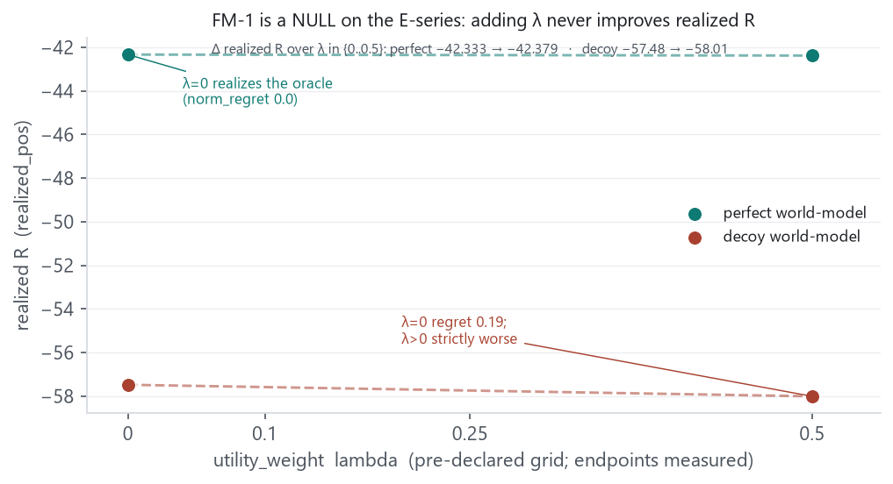
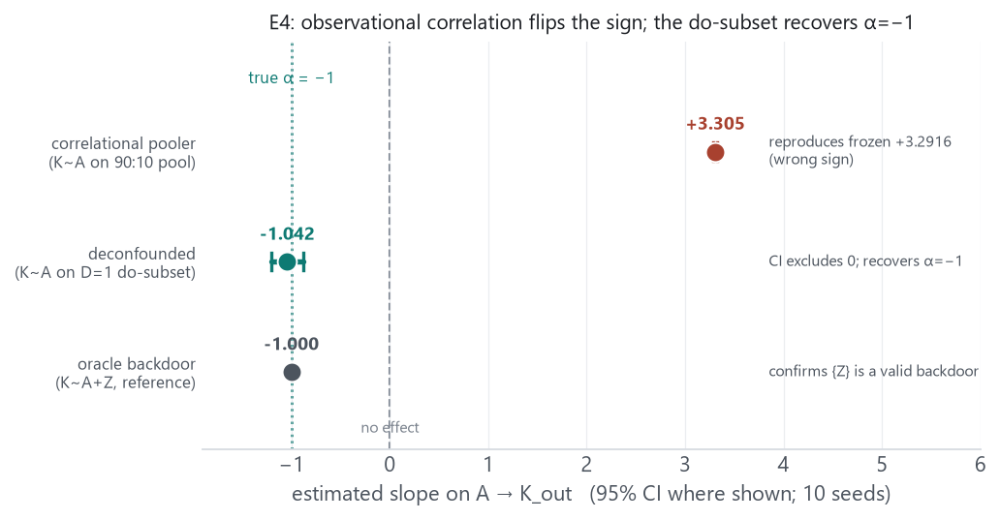

This report records the 2026-09-07 layer on top of the E2 empirical record: two learned-arm de-risks for the E-series decision pipeline (the objective-function fixes and E4 deconfounding), and the design decision that keeps E2 a single-harm atom. The through-line across all three is that discovery-completeness, not the objective or the planner, is the E-series lever — the objective fixes buy nothing here, while the deconfounding route that matters is an interventional-identification one, not an objective knob. Everything below is a DEV prototype or truth-free analysis; nothing frozen is changed.
2026-09-06-e2-discovery-method-and-livetrap.md) and research direction
(2026-09-06-e5-direction-and-causal-upgrade-synthesis.md); those cover the discovery-method
arc, the operating-point redesign (9d87a60), the 3-arm thesis fire, and the stratified
P0→K5 recovery prototype (10/10) — not repeated here. Supersedes / absorbs
2026-09-07-fm-objective-eseries-revalidation.md,
2026-09-07-e4-deconfound-feasibility.md, and 2026-09-07-MORNING-BRIEFING.md
(moved to reports/archive/2026-09-07/).
Completes plans/011 §2 and plans/012 step-1.
Re-validation of the legacy objective-function fixes on the LIVE E-series objective
(v2_regret.py / counterfactual_metrics.py), truth-free, pre-declared λ
grid. The legacy magnitudes were Env I–IV; this tested whether they transfer.

utility_weight λ is swept over the pre-declared grid
{0, 0.1, 0.25, 0.5}. Perfect world-model (teal):
λ=0 already realizes the oracle (norm_regret 0.0);
λ>0 is flat then mildly harmful (−42.333 → −42.379).
Decoy world-model (rust): λ=0 regret 0.19; λ>0
strictly worse (−57.48 → −58.01). Only the
λ=0 and λ=0.5 endpoints are given in
the source and drawn as measured markers; the dashed segment is interpolation across the grid, not a
fabricated intermediate point. Neither line ever rises.
utility_weight) does NOT transfer. The flat-hinge
structure the fix targets IS present on the E-series (13/64 committed states have a flat R-optimal
plateau with z-utility spread), but adding the utility_weight z-utility term never
improves realized R across λ ∈ {0, 0.1, 0.25, 0.5}:
plans/011 FM-1/FM-2 magnitudes are legacy-only — must not
be credited to the E-series. The option-a-utility-weight-validated memory is caveated
accordingly. This completes the plans/012 step-1 gate as a null, and reinforces
the night’s through-line: discovery-completeness, not the objective/planner, is the E-series
lever. (Prototype: scratchpad fm_eseries/.)
Feasibility only; the scored gate arm remains user-gated.
Truth-free feasibility check on the E4 DGP (e4.py): mechanism
K_out = α·A + θ·Z + c with
α=−1, θ=+2.5, latent
Z~N(0,1) driving BOTH the clipped behavior policy
A = clip(0.5 + λ·Z + η) (λ=1)
AND the outcome → observational correlation is sign-flipped; do() draws
A ⊥ Z, breaking the backdoor. 10 seeds:

| estimator | slope on A→K_out | 95% CI | verdict |
|---|---|---|---|
| correlational pooler (naive K~A on 90:10 pool) | +3.3046 | [+3.29, +3.32] | reproduces frozen +3.2916 sign reversal (wrong sign) |
| deconfounded (K~A on D=1 interventional subset) | −1.0423 | [−1.201, −0.883] | CI excludes 0, recovers true α=−1 |
| oracle backdoor (K~A+Z; Z latent, reference) | −1.0000 | — | confirms {Z} is a valid backdoor |
causal-planner-direction-explored
memory) — the identification route is SOUND, just finite-sample fragile at low seed/n. The scored
E4 gate arm + matched corpus module remain user-gated (GATE_CONTRACT_E4 defers them).
(Prototype: scratchpad e4_feas/.)
User-approved.
Trigger: verification that E2’s mechanism equations (e2.py) are a
byte-for-byte copy of the retired legacy env_ii.py (adjacency identical); only the decoy
(omit P0→K5), the operating-point tuning (P6 width), and the latency/tape
infra are E2’s own. E2 harms exactly ONE service (K5), while the design table says “several
harmed xApps”; SPEC.md:241 had been trimmed to “omits EXACTLY ONE edge
P0→K5” (spec matched the code, not the table).
Decision (after an 8-lens debate — purist / conservative / construct-validity / adversarial-realism / minimalism / discovery-difficulty / falsificationist / composition-first): keep E2 as the clean single-harm atom. Do not rebuild, do not add several harms to E2.
SPEC.md “one stress
axis per env” + “E5 = composition only, no new mechanism.” Avoids churning a
frozen/validated artifact and the cascade risk (gold-plating every stepstone → E5 never ships).| Item | Status |
|---|---|
| E1 recovery | FROZEN, passing |
| E2 operating-point redesign (trap live, gap 0.190) | FROZEN 9d87a60 |
| E2 single-harm design + spec honesty note | DECIDED + committed ce426f5 |
| E2 discovery (frozen RCoT-v2) recovers harmful P0→K5 | 0/10 (baseline can’t) — FROZEN method |
| E2 stratified P0→K5 recovery | 10/10, DEV PROTOTYPE (not frozen; promoting = user pre-reg) |
| E2 3-arm thesis end-to-end (live trap) | FIRED — DEV prototype on frozen scoring machinery |
| E3 multi-hop chain recovery | 100% recall, DE-RISKED (noiseless; recheck at E5 noise); discovery freeze user-gated |
| E4 deconfounding identification | feasibility VIABLE; scored arm user-gated |
| FM-1/FM-2 objective on E-series | NULL — objective is not the lever |
| E5 (env + contract + gate) | NOT built; composition-only; user-gated |
e3slice module.Provenance. All results are TRUTH-FREE DEV prototypes / analysis unless marked FROZEN; nothing
here changes a frozen constant, mechanism, or gate. Committed this cycle: SPEC.md E2 honesty note
ce426f5 (doc-only). Prototypes live in scratchpad fm_eseries/ (FM-1/FM-2) and
e4_feas/ (E4 feasibility). Builds on 2026-09-06-e2-discovery-method-and-livetrap.md
and 2026-09-06-e5-direction-and-causal-upgrade-synthesis.md. Supersedes the three absorbed
2026-09-07 files moved to reports/archive/2026-09-07/. This report lives under the
gitignored reports/ tree.
Figures. reports/2026-09-07-eseries-learned-arms-and-e2-design-decision/make_figs.py
(matplotlib Agg, ~150 dpi). Numbers transcribed from this record; only measured values are drawn.